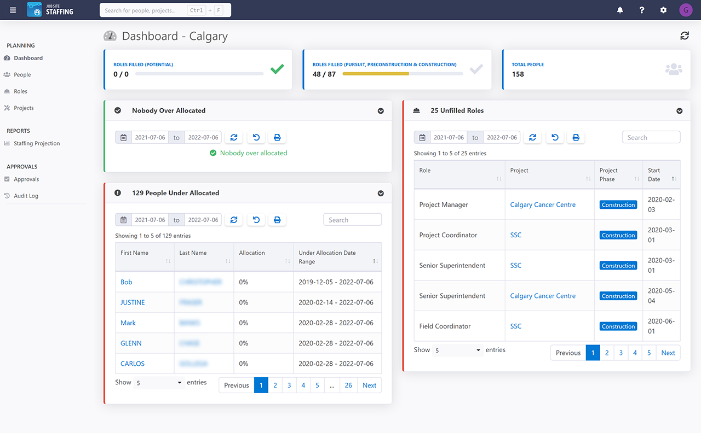
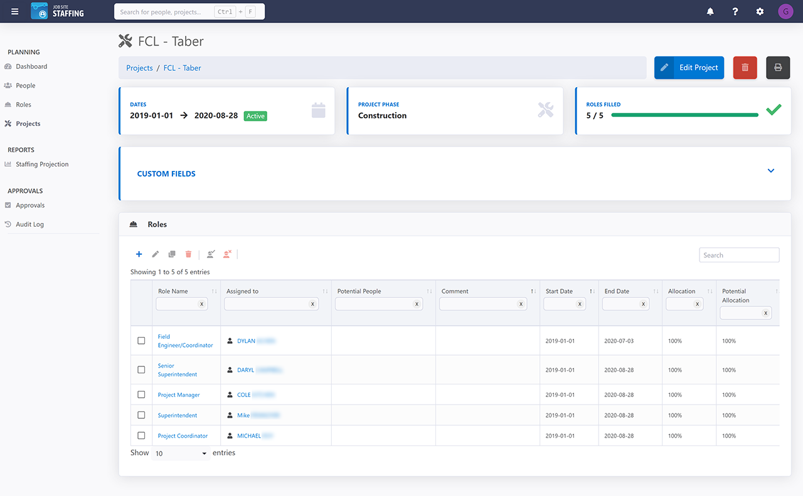
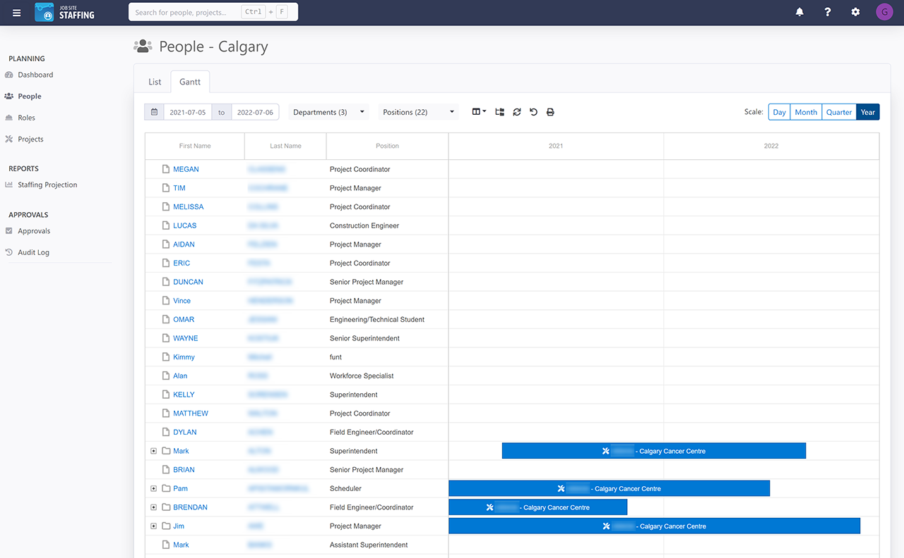
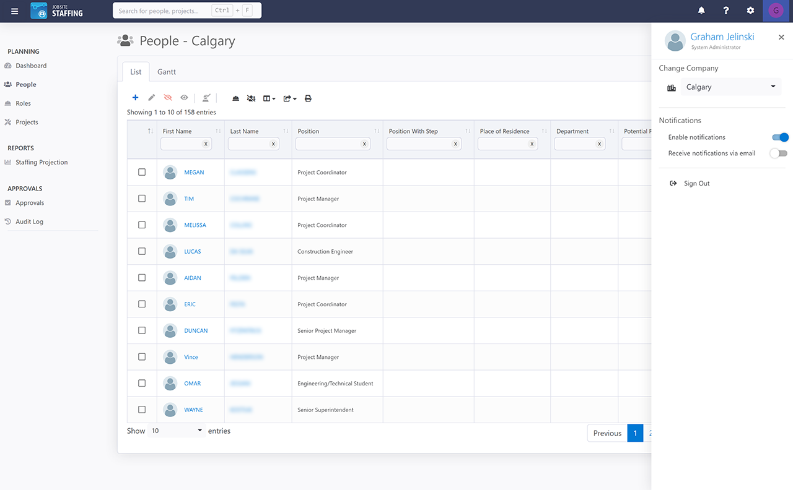
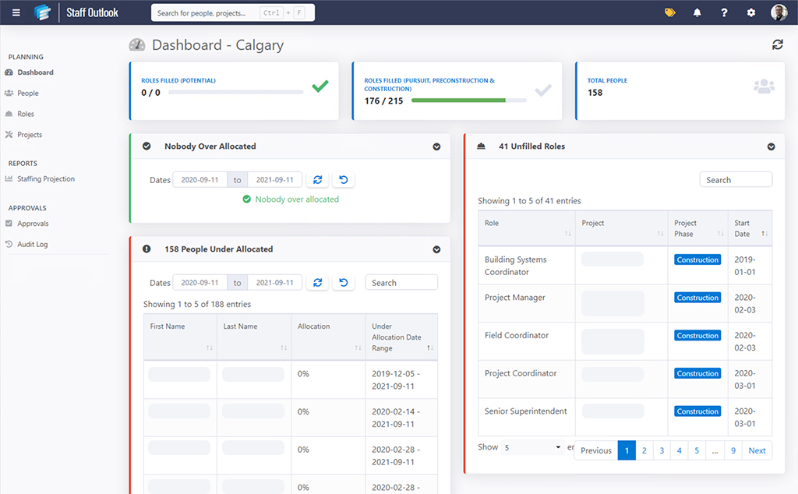
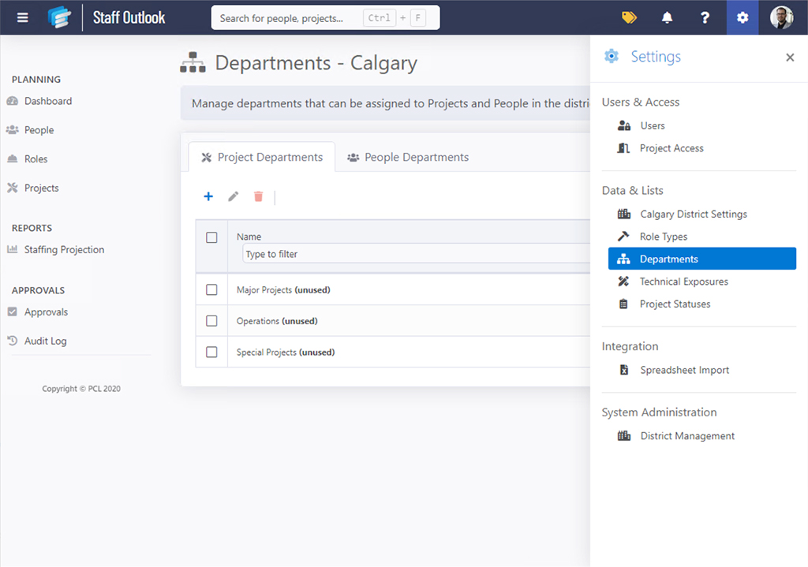

Staff Planning
This project started in January 2019 and wrapped up in 2021. My role on this project included both user interface design and front-end development; I also provided the logo for the branding. I worked with a team of four other people that includes project management, business analysis, and full-stack development. Throughout its lifespan, the application went through several name changes including Staff Planning, Staff Outlook, and Jobsite Staffing. Those names will be used interchangeably throughout this case study.
   The Challenge
This project started very abruptly in January 2019 with a simple yet complex mandate: build a web app that allows people to be planned on projects. Oh, and it needs to be completed in two months.
“We started by talking to managers and HR coordinators in PCL’s Toronto district”
As a dev team, we knew this was unattainable but understood that something had to be released in a timeframe relative to March or April. We started by talking to managers and HR coordinators in PCL’s Toronto district, where the request came from.
Going Back Further
The request by the Toronto district for a new staff planning app started well before 2019. Another application had been developed by a different project team that did something very similar. The previous product showed promise but, when demoed to the Operations team in Toronto, was ultimately rejected for being too complicated. Not only did it plan staff on projects, but it provided staff budgets, costing forecasts, equipment transfers, complex reporting, etc. All these features were stacked on layer by layer, which made the app slower and more complicated as time went on.
Analyzing the Client’s Ask
We knew how difficult this previous app was to use, so we had a great reference point for what not to do. Regardless, we didn’t want to run on bias and assumption, so we spent quite some time talking to Toronto’s HR department, since they were the ones who plan which projects people are assigned to and their durations.
After several discussions, the mandate was pretty clear:
- They wanted an app that allowed them to create people.
- They wanted an app that allowed them to create projects and roles.
- They wanted an app that would allow them to assign people to those roles and projects.
The people we talked to also had experience with the previous staff planning app, so we knew they had valuable feedback to provide. It may not have met their needs, but we wanted to make sure we copied the good features the previous app contained. After several discussions, we settled on the following requests:
- The previous app provided a really nice overall view for planning staff at a district level. The new app, whilst needing to provide a project-specific focus, should primarily focus on district-level planning.
- Gantt charts. General Contractors love gantt charts and PCL is no exception. They wanted to be able to see their plans visually, not just in grids, so we needed to ensure gantt charts provided an alternate view of the data they were manipulating.
- Project approvals. The app was designed with the intent of provide admin-level access to an entire district’s staff plan. However, Toronto asked us to provide an ability for project managers (PM) to request roles on their own projects. They wanted a PM to request a role by creating one, it would be sent to an approvals queue. If an admin approved the request, it would be added to the project.
Designing Around the Architecture
When we had cleared the requirements with Toronto, and it was time to start development, we already had some architectural decisions put in place that greatly affected what the UI would be:
- The app would be web-based
- It was going to use Microsoft’s MVC architecture, which meant C# for the back-end, and jQuery/bootstrap for the UI.
We didn’t have time to build a UI from scratch, due to time constraints, so we needed a launching point. We analyzed the requirements given to us, interface paradigms used in other similar applications, and resources available on the web.
We settled on a theme called SB Admin 2. It was visually appealing, contained all the controls we needed to build the application, and was a good starting point for a UI build out over time.
Meeting Expectations
The app was released for initial use in May 2019. While the first pass was acceptable, it quickly became obvious that this app needed more thought if it was to reach a level of acceptability with the client.
We needed to sit down with our users and gain a proper understanding of what Staff Outlook was intended for. We jumped on a plane, flew to Toronto, and spent a couple days hearing them out and getting their insight.
This proved to be invaluable; while we could have conducted the meetings via online video conference, we knew that many ideas are lost in translation this way. In-person meetings helped us dig through the layers and discover what the business purpose for Staff Outlook was:
“We needed to sit down with our users and gain a proper understanding of what Staff Outlook was intended for.”
- Operations managers hold a monthly meeting where they anticipate staff projections. They look at the employees in their district, then they look three to six months into the future to determine if they will have a staff deficit or a staff surplus and the projects where those deficits and surpluses will occur. This will help them determine if they need to hire more people for upcoming projects or if they need to find work for people who are coming off them.
- The old process was all done in excel. It was sophisticated for a spreadsheet, but severely limiting in flexibility.
- Operations managers wanted an app that would allow them to assign employees to projects and roles, set start and end dates for those roles, and ultimately generate a report that would automatically expose those staff projections for them.
Moving Forward
Now we knew, this is what the client was looking for: an app that would generate a staffing projection report automatically, based on the data in the app. This became the focus moving forward.
We analyzed the app, in its current form, to determine if it could be used without refactoring anything. We determined it could; it was actually on a pretty good foundation. We knew that we needed to build the report they were looking for and that would satisfy most of their needs.
Onboarding Other Districts
Word was spreading that Staff Outlook was promising to be a winner. Other districts in other cities were showing a lot of interest: Edmonton, Calgary, Los Angeles, Hawaii to name a few. No longer could we focus purely on Toronto for direction, now our user base was growing and so were the use cases.
We had to balance what all the districts were asking for, and we decided to take a user-based approach: if someone requested a feature, it would be vetted through other users first. If we heard consistently that “feature X” would prove valuable, then we include it. If it was not, then it sits in a backlog to be refined at a later time. This really helped eliminate feature bloat and gain continual understanding of users’ needs within the app itself.
How Could We Have Done Better?
Hindsight is always 20/20, and as I look back on this project, there are definitely things we should have done differently.
Research and observation. Plain and simple. Remember that request to allow project managers to request roles and an admin approves them? Never used. Not one project manager role has been created by the users to date. That was a feature request that we implemented without doing any testing. Proper field research should have been conducted: would a PM actually use this feature? Would they have time to make these requests or would it fall back on admins? Could we have prototyped the idea and used visual testing techniques to validate the result? Usability testing would have, at least, given us a better idea of the viability of this feature request.
“This is a discussion that occurred several months after the project started, it should have been a discussion that occurred from the very beginning.”
Discussions with our users and clients. When we finally flew to Toronto and sat down with our clients, we finally got the insight we were looking for. This is a discussion that occurred several months after the project started, it should have been a discussion that occurred from the very beginning. Taking the time to listen to our users costs up front, but it pays dividends down the road.
We also should have pushed back and slowed the timelines down. No good can come from such an aggressive release date; fortunately, the release date wasn’t mandated by our client, that was a corporate decision, so dates were flexible. Second, we got lucky. We had some very talented people building an app that was surprisingly useful, given the lack of requirements up front.
We were saved on the back half of the project. We were able to listen to our users and refine, refine, refine. The app, today, looks almost nothing like the app we started building in 2019. That’s due to gaining insight into our users, listening to them, and building the foundation on that.